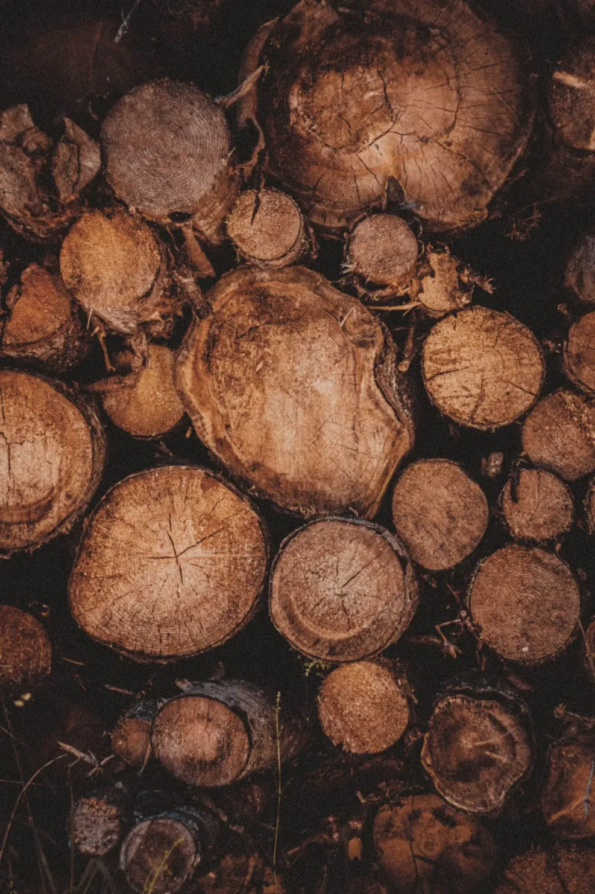
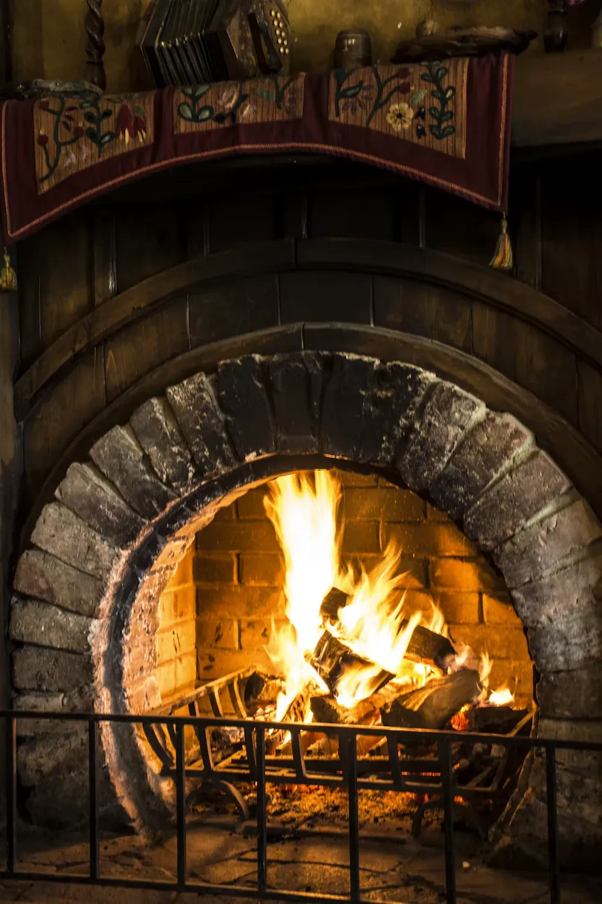
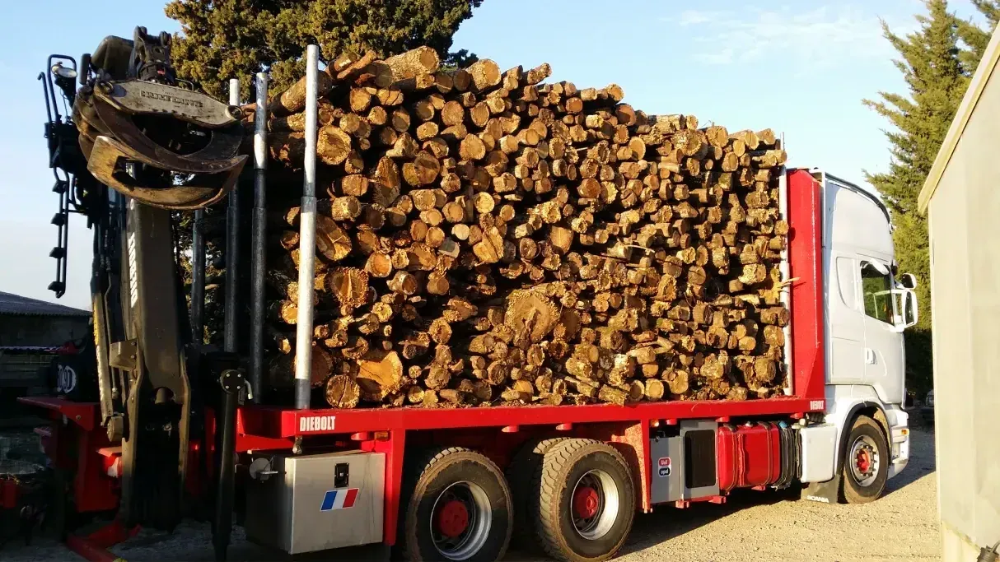
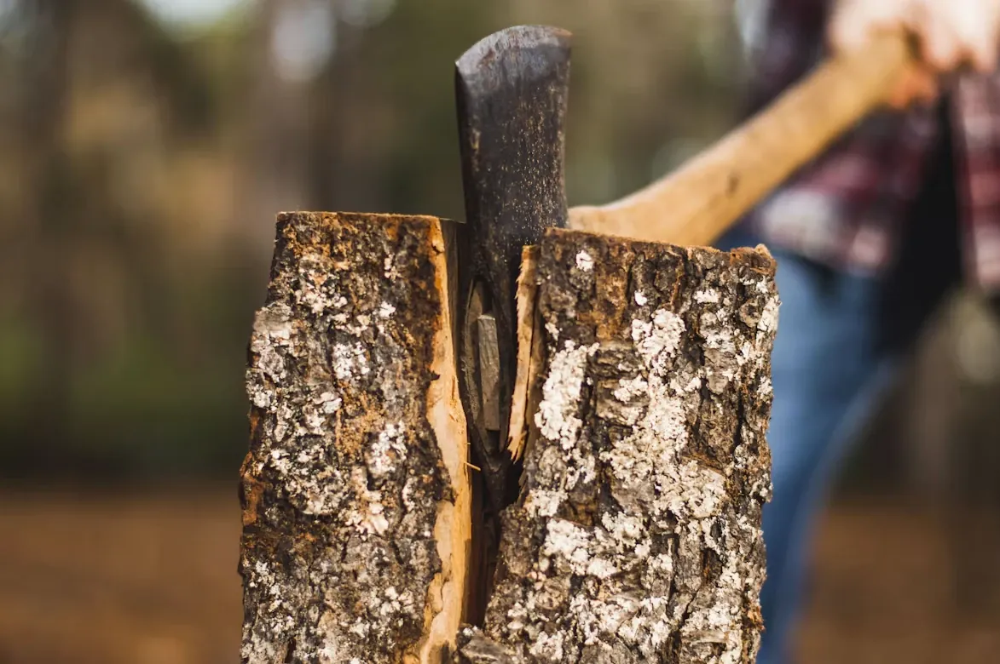

Qui sommes-nous
Le Stère d’Or vend du bois de chauffage comme nous aimerions l'acheter : sec, mesuré honnêtement, livré proprement sur palette.


Du bois de nos forêts
Nos feuillus viennent de coupes d'éclaircie et d'exploitations forestières gérées durablement, Le bois est fendu à la longueur, puis séché sous abri ventilé pendant 18 à 24 mois. Une partie passe ensuite au séchoir pour descendre sous 15 % d'humidité.

Un volume transparent
Le stère est une unité trompeuse dès qu'on recoupe les bûches. Nous affichons donc systématiquement le volume en stères et en m³ apparent, et vous pouvez mesurer votre tas à la livraison.

Une énergie locale et renouvelable
Bien sec et brûlé dans un appareil performant, le bois est l'une des énergies les moins chères et les plus locales. Nous conseillons volontiers nos clients sur leur installation : un poêle récent consomme quatre à cinq fois moins de bois qu'une cheminée ouverte.